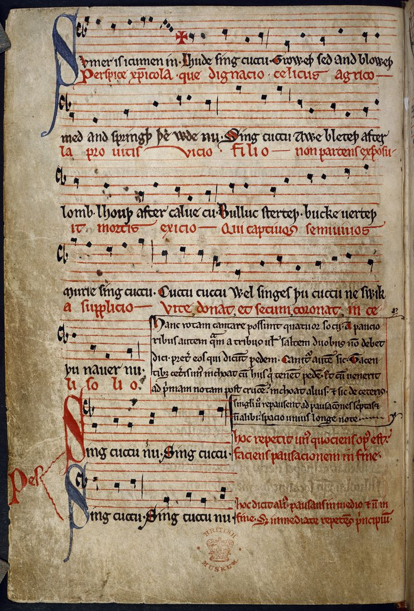

Online edition · working sample
Medieval polyphony from its broken books
Explore the sources and compositions of insular polyphony: read each piece as a modern score beside the manuscript page it survives on, listen to it, follow the editors' commentary bar by bar, search its texts, and see clearly what survives and what has been reconstructed.
